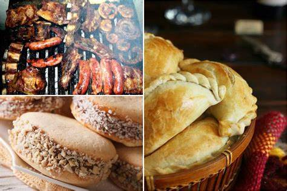
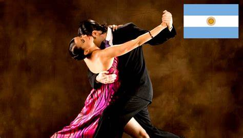
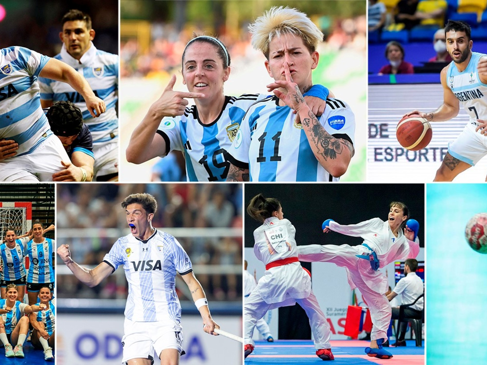
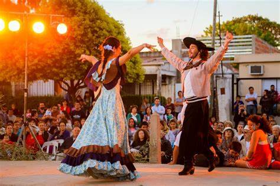
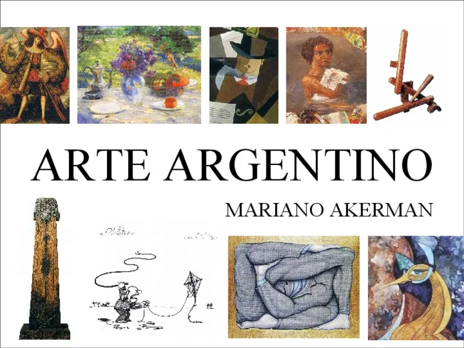
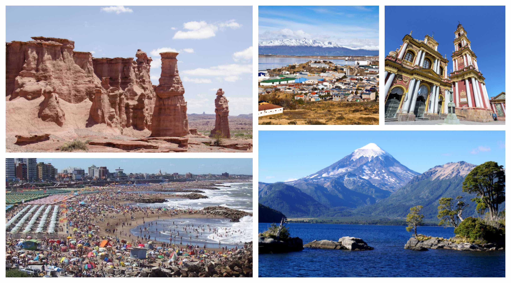

Argentina tiene una cultura rica y diversa, influenciada por inmigrantes europeos, especialmente españoles e italianos.
Español (con modismos y acento rioplatense).
Se destaca la carne vacuna (asado), empanadas, milanesas, mate (infusión tradicional) y dulces como el alfajor y el dulce de leche.
Tango (símbolo nacional), folclore (chacarera, zamba), rock nacional y cumbia villera.
El fútbol es pasión nacional, con figuras como Maradona y Messi. También se destacan el rugby, el básquet y el automovilismo.
El Día de la Independencia (9 de julio), la Fiesta del Mate y el Carnaval.
Escritores como Borges y Cortázar son referentes. Buenos Aires es considerada la "capital del libro" por su cantidad de librerías.
Desde las Cataratas del Iguazú hasta la Patagonia, el país ofrece una gran diversidad de climas y paisajes.
